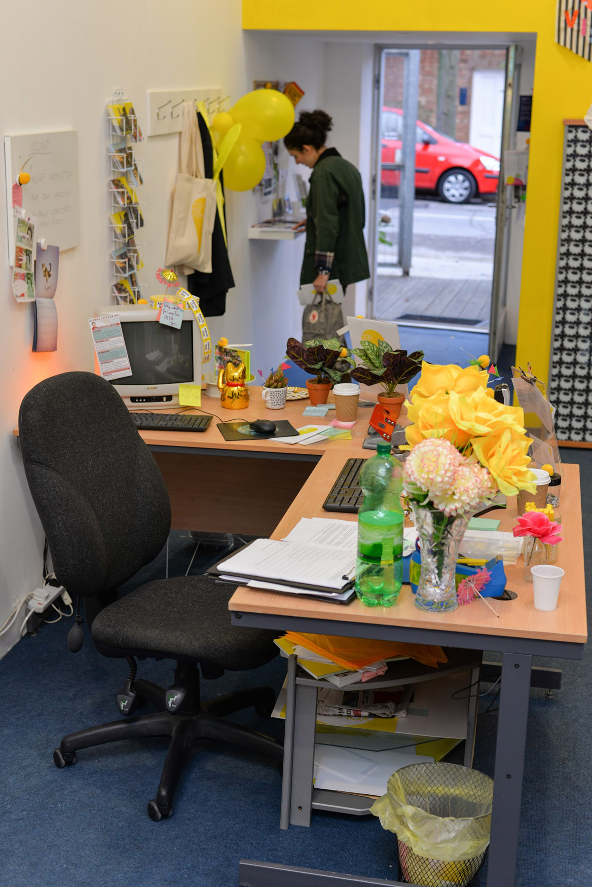
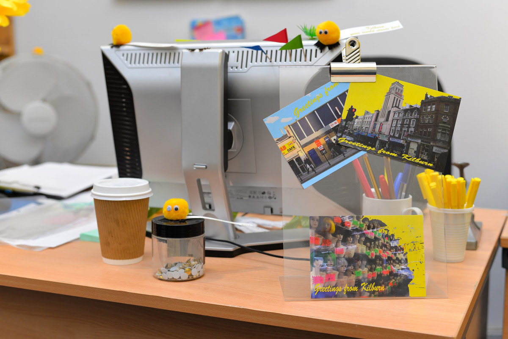
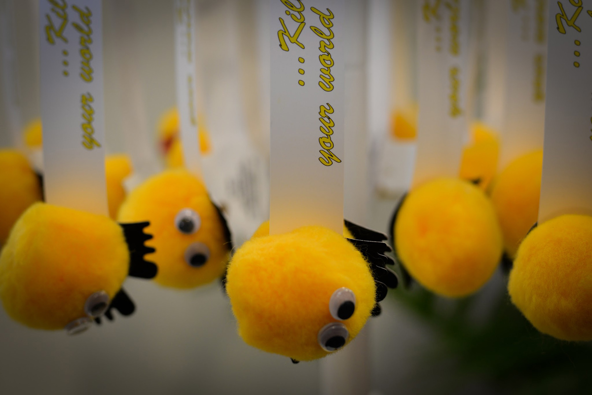
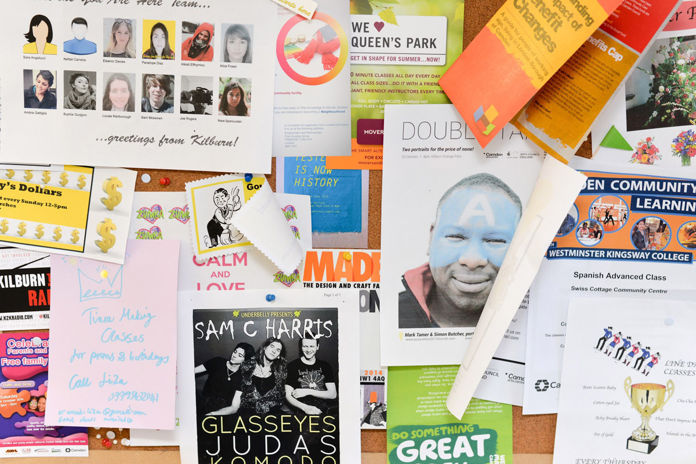
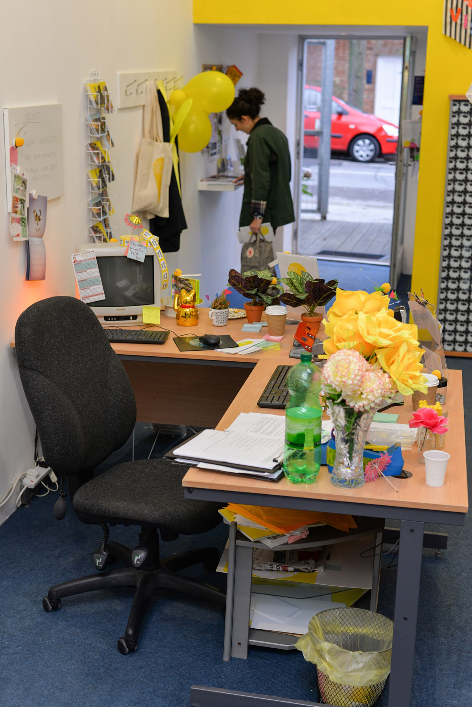
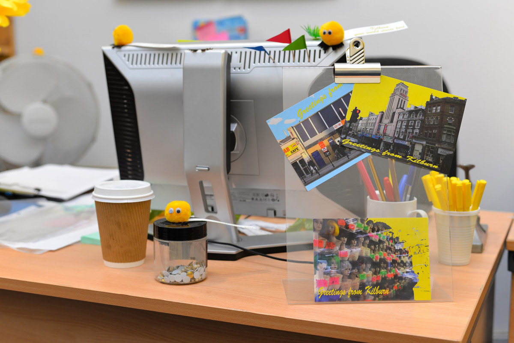
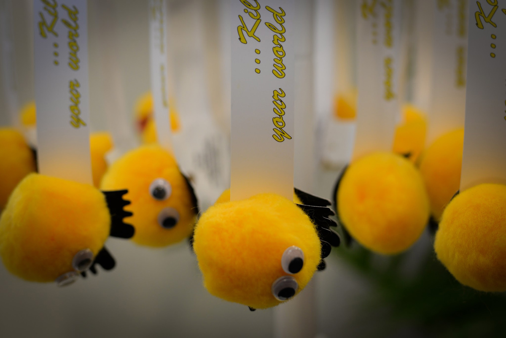
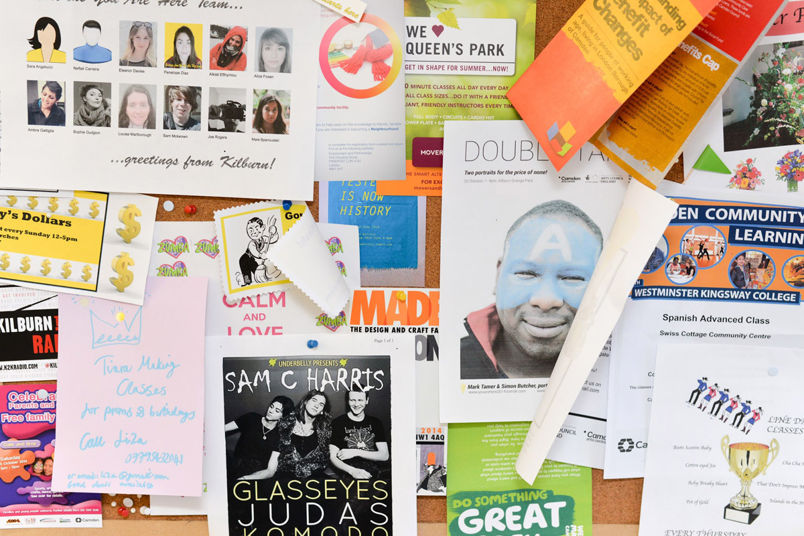

You Are Here was an experience-based art project that took place at Kingsgate Project Space and independent shops, cafes and public spaces along Kilburn High Road during October and November 2014. Together with Penelope Diaz, I led a team of volunteers from Camden Arts Centre to deliver the exhibition. We transformed Kingsgate Project Space into a Tourist Information Office, complete with You Are Here merchandise and themed tours for visitors. This project was funded by Camden Arts Centre, the Arts Council England and Camden Council.
Watch a short video about the projectDownload the catalogue
Visit the project website